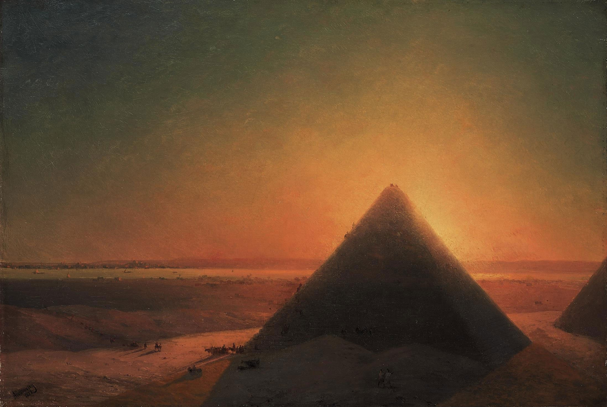

L'Abreuvoir by Jean-Honoré Fragonard

The Great Pyramid at Giza by Ivan Ayvazovsky
Definition
-
Landscape painting also known as landscape art is the depiction of natural scenery such as mountains, valleys, trees, rivers, and forests, especially where the main subject is a wide view—with its elements arranged into a coherent composition. In other works, landscape backgrounds for figures can still form an important part of the work. Sky is almost always included in the view, and weather is often an element of the composition. Detailed landscapes as a distinct subject are not found in all artistic traditions, and develop when there is already a sophisticated tradition of representing other subjects.
Landscape views in art may be entirely imaginary, or copied from reality with varying degrees of accuracy. If the primary purpose of a picture is to depict an actual, specific place, especially including buildings prominently, it is called a topographical view. Such views, extremely common as prints in the West, are often seen as inferior to fine art landscapes, although the distinction is not always meaningful; similar prejudices existed in Chinese art, where literati painting usually depicted imaginary views, while professional artists painted real views.
Origins
-
The word "landscape" entered the modern English language as landskip (variously spelt), an anglicization of the Dutch landschap, around the start of the 17th century, purely as a term for works of art, with its first use as a word for a painting in 1598. Within a few decades it was used to describe vistas in poetry, and eventually as a term for real views. However the cognate term landscaef or landskipe for a cleared patch of land had existed in Old English, though it is not recorded from Middle English.
Two main traditions spring from Western painting and Chinese art, going back well over a thousand years in both cases. The recognition of a spiritual element in landscape art is present from its beginnings in East Asian art, drawing on Daoism and other philosophical traditions, but in the West only becomes explicit with Romanticism.
The earliest forms of art around the world depict little that could really be called landscape, although ground-lines and sometimes indications of mountains, trees or other natural features are included. The earliest "pure landscapes" with no human figures are frescos from Minoan art of around 1500 BCE.
Ivan Konstantinovich Aivazovsky was a Russian Romantic painter who is considered one of the greatest masters of marine art. Baptized as Hovhannes Aivazian, he was born into an Armenian family in the Black Sea port of Feodosia in Crimea and was mostly based there.
One of the most prominent Russian artists of his time, Aivazovsky was also popular outside Russian Empire. He held numerous solo exhibitions in Europe and the United States. During his almost 60-year career, he created around 6,000 paintings, making him one of the most prolific artists of his time.[5][6] The vast majority of his works are seascapes, but he often depicted battle scenes, Armenian themes, and portraiture. Most of Aivazovsky's works are kept in Russian, Ukrainian, Armenian, Turkish museums as well as private collections.
Ivan Ivanovich Shishkin was a Russian landscape painter closely associated with the Peredvizhniki movement.
Shishkin was born to a Russian merchant family in Yelabuga of Vyatka Governorate (today Republic of Tatarstan) and graduated from the Kazan gymnasium. Then he studied at the Moscow School of Painting, Sculpture and Architecture for four years. After that, he attended the Saint Petersburg Imperial Academy of Arts from 1856 to 1860 and graduated with the highest honours and a gold medal. He received the imperial scholarship for his further studies in Europe. Five years later Shishkin became a member of the Imperial Academy in St. Petersburg and was professor of painting from 1873 to 1898. At the same time, Shishkin headed the landscape painting class at the Highest Art School in St. Petersburg.
Alexei Kondratyevich Savrasov was a Russian landscape painter and creator of the lyrical landscape style.
Savrasov was born into the family of a merchant. He began to draw early and in 1838 he enrolled as a student of professor Karl Rabus at the Moscow School of Painting, Sculpture and Architecture (MSPSA). He graduated in 1850 and immediately began to specialize in landscape painting.
_by_Vincent_van_Gogh.jpeg)